Supported release component — rejected 1.7/5
All 41 complete decoded896×512 canvases and 12 component opinions were directly reviewed. The sweet stays supported and its fans broadly conserved, but withdrawal leaves extra coral thumb material and distorts the cuffs. Late palms rise into a display pose rather than a quiet coherent rest.
Source endpoint 4.5 provisional; actual in-game WRAP 2.8 unchanged. This is a local motion reference with one conditioned start image. The desired release endpoint was a human QC reference, not a conditioned end image. No runtime or cinematic acceptance.
Component overview and full remaining objective · Every frame/component opinion · Exact manifest saved before dispatch · Actual render receipt
| Component | Draft score | Evaluation |
|---|
| two coherent owned mittens | 1.3/5 | Two main palms rise, but additional coral shapes remain below the left cuff and at the left neck. Principal hand count alone conceals broken hand ownership. |
| left thumb conservation | 0.8/5 | From frame14 onward a coral thumb-like lobe stays at the left neck while the main mitten departs. It does not remain attached to the withdrawing hand. |
| right neck material conservation | 2.5/5 | The right neck develops a bulb as the mitten lifts. Its former hand-contact region is not conserved as the same short flexible paper winding. |
| sleeve cuff mitten topology | 1.6/5 | Withdrawal smears and separates the left glove/cuff contour. Late left hand becomes a long oval with a lower coral wedge; right cuff also deforms. |
| clean disengagement before withdrawal | 1.8/5 | Both palms eventually move away, but the movement leaves coral material at the wrapper and lacks a coherent whole-hand separation seam. |
| quiet two hand rest | 1.4/5 | Hands rise into an unrequested display pose, then settle asymmetrically. Tall upright left glove does not match the quiet relaxed endpoint. |
| single wrapper and broad fans | 4.1/5 | Both broad gold fans remain attached to the central wrapper throughout. Local neck bulbs and changing contours prevent a stronger material-conservation opinion. |
| covered oval identity | 4.3/5 | A single opaque gold central oval remains covered with no visible red candy reveal or extra central sweet. Modest silhouette/texture variation remains. |
| table support | 4.2/5 | The central sweet remains low on the purple work surface during withdrawal. Local hand remnants and small footprint changes undermine the complete supported release. |
| character scene registration | 3.5/5 | Unrequested head/expression change and late cuff/silhouette/working-footprint drift weaken continuity against the fixed room. |
| painted style and readability | 4.0/5 | Entry retains broad painted colour and contours; blurred withdrawal and malformed late mittens reduce clarity. The inherited busy room remains a separate 4.4 source priority. |
| whole supported release component | 1.7/5 | Rejected: preserved table support and fans do not compensate for detached thumb material, broken cuffs, elongated palms and absent quiet coherent two-hand rest. |
Frame 0 · 0.000s · pose graphics 4.3/5
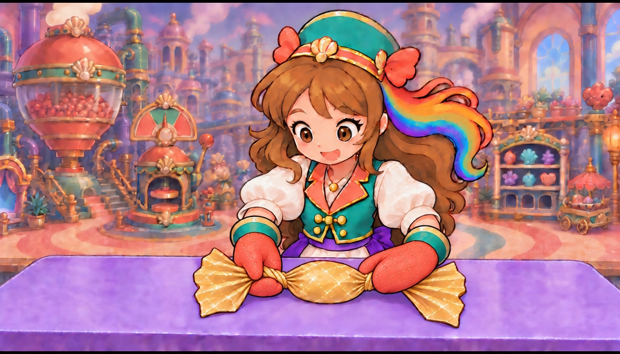
Initial two sleeve-owned coral mittens grip the finished short gold necks. One covered oval and two broad fans rest on the purple table; this is an entry still, not proof of release.
Complete action, current game and owner acceptance unassigned for this individual canvas.
Frame 1 · 0.042s · pose graphics 4.3/5
Entry pose remains nearly identical: both hands contact their own necks and both fans remain attached. No separation yet.
Complete action, current game and owner acceptance unassigned for this individual canvas.
Frame 2 · 0.083s · pose graphics 4.3/5
Both mittens and short neck contacts remain legible. The candy stays supported with the same opaque central body.
Complete action, current game and owner acceptance unassigned for this individual canvas.
Frame 3 · 0.125s · pose graphics 4.3/5
Small painted texture variation occurs while the hands retain the finished-neck grips; release has not started.
Complete action, current game and owner acceptance unassigned for this individual canvas.
Frame 4 · 0.167s · pose graphics 4.3/5
Two rounded mittens remain at the gold necks. The fans and central oval keep their entry arrangement.
Complete action, current game and owner acceptance unassigned for this individual canvas.
Frame 5 · 0.208s · pose graphics 4.3/5
Hold ends with both neck contacts still present and table support intact. No clean withdrawal has occurred.
Complete action, current game and owner acceptance unassigned for this individual canvas.
Frame 6 · 0.250s · pose graphics 4.3/5
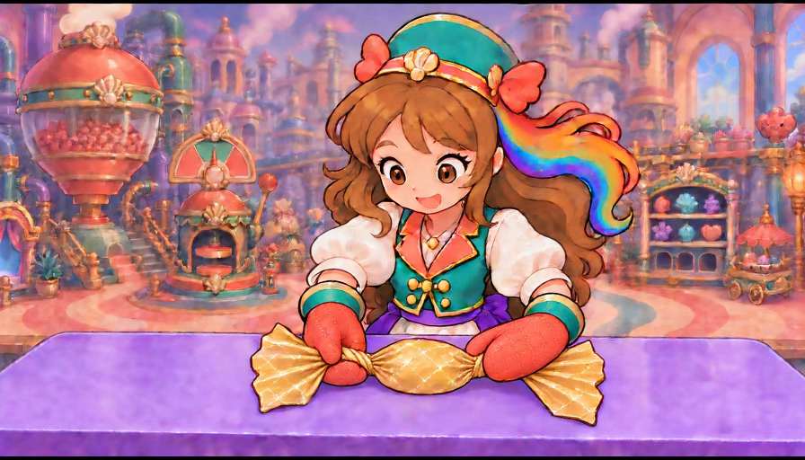
At the instructed release interval the pose still holds both short necks. The gold paper remains broadly conserved.
Complete action, current game and owner acceptance unassigned for this individual canvas.
Frame 7 · 0.292s · pose graphics 4.3/5
Both palms continue gripping; no visible purple gap opens between either mitten and its neck.
Complete action, current game and owner acceptance unassigned for this individual canvas.
Frame 8 · 0.333s · pose graphics 4.3/5
Supported covered oval and two attached broad fans remain clear, but the release is delayed.
Complete action, current game and owner acceptance unassigned for this individual canvas.
Frame 9 · 0.375s · pose graphics 4.3/5
The two connected coral mittens still own their neck contacts. This remains a hold, not a completed disengagement.
Complete action, current game and owner acceptance unassigned for this individual canvas.
Frame 10 · 0.417s · pose graphics 3.8/5
Hands stay at the necks while the face begins changing expression and painted facial detail; no withdrawal yet.
Complete action, current game and owner acceptance unassigned for this individual canvas.
Frame 11 · 0.458s · pose graphics 3.8/5
Both mittens retain the grip and the head lowers slightly. Paper remains supported but the intended simple release is not visible.
Complete action, current game and owner acceptance unassigned for this individual canvas.
Frame 12 · 0.500s · pose graphics 3.8/5
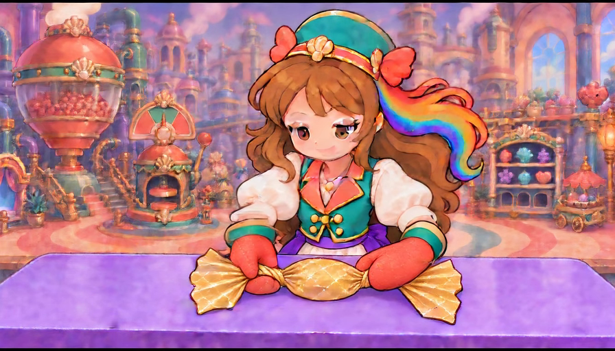
Eyelids and mouth visibly change while both neck contacts remain. Unrequested facial acting competes with the small working action.
Complete action, current game and owner acceptance unassigned for this individual canvas.
Frame 13 · 0.542s · pose graphics 3.8/5
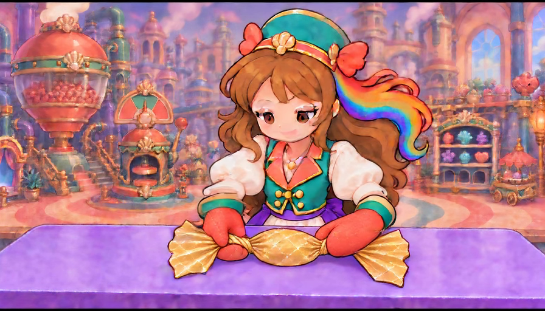
Head and eyes continue changing. The two palms still hold, and a reliable visible release seam is absent.
Complete action, current game and owner acceptance unassigned for this individual canvas.
Frame 14 · 0.583s · pose graphics 2.1/5
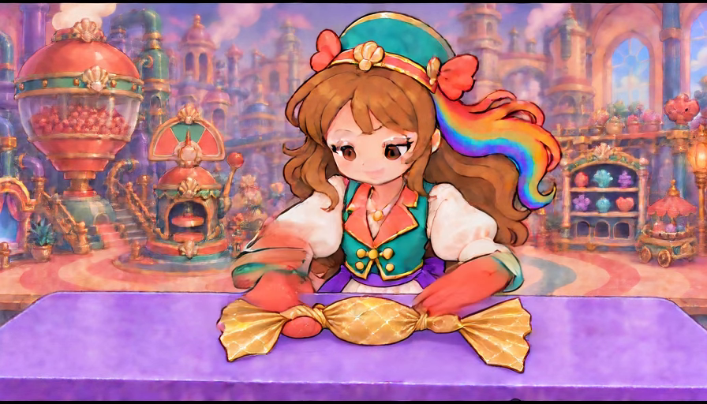
Rapid hand withdrawal begins with smeared cuff/mitten contours. A coral thumb-like oval is left beside the left neck; the right neck grows a separate bulb.
Complete action, current game and owner acceptance unassigned for this individual canvas.
Frame 15 · 0.625s · pose graphics 2.1/5
Both departing hand silhouettes smear and stretch. The coral left-neck remnant stays on the table and the right gold bulb persists.
Complete action, current game and owner acceptance unassigned for this individual canvas.
Frame 16 · 0.667s · pose graphics 2.1/5
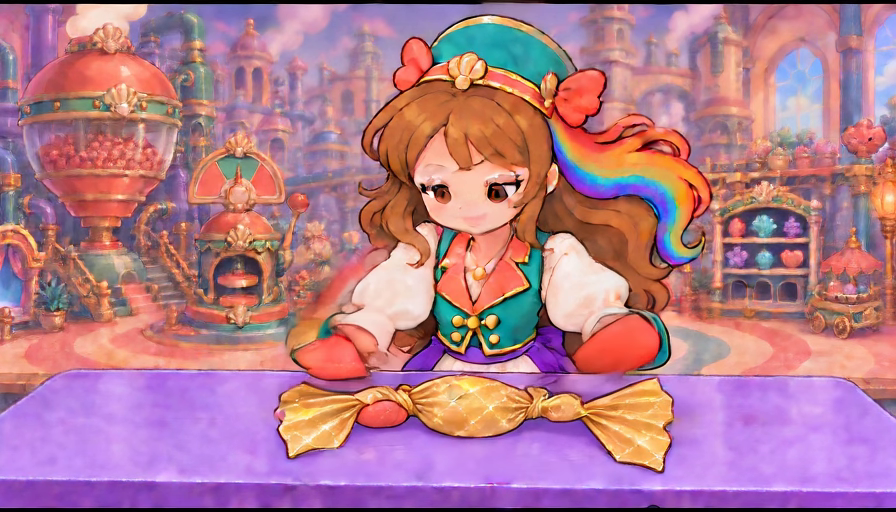
Main mittens begin separating above the wrapper, but the left coral lobe remains at the neck. Separation does not conserve the whole hand topology.
Complete action, current game and owner acceptance unassigned for this individual canvas.
Frame 17 · 0.708s · pose graphics 1.5/5
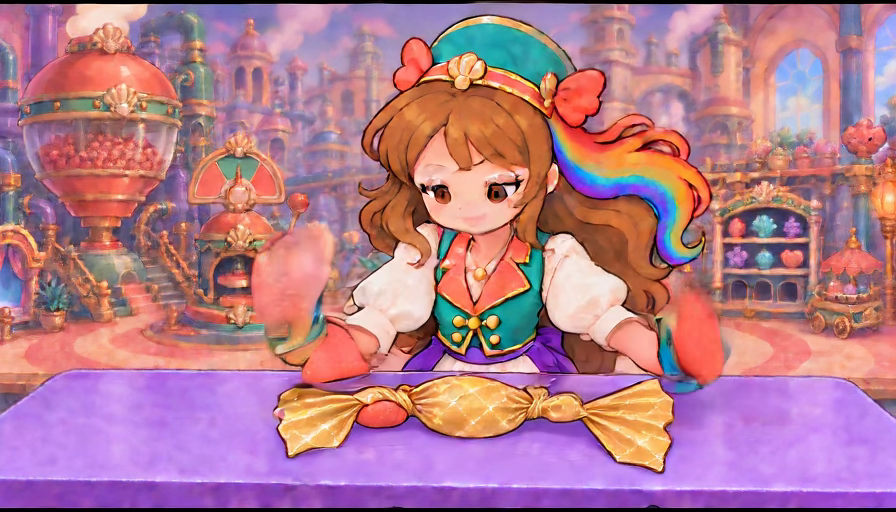
Both palms rise sharply into a display pose. The left cuff/mitten outline breaks into separate shapes and the leftover coral neck lobe remains.
Complete action, current game and owner acceptance unassigned for this individual canvas.
Frame 18 · 0.750s · pose graphics 1.5/5
Raised palms are distinct from the supported wrapper, but the left hand has a second coral/cuff-associated wedge below it and another coral lobe at the neck.
Complete action, current game and owner acceptance unassigned for this individual canvas.
Frame 19 · 0.792s · pose graphics 1.5/5
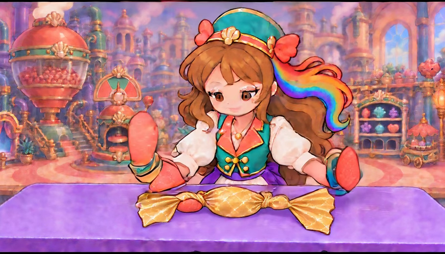
Two principal palms are upright. The extra left coral shapes remain; the right neck contains a newly enlarged bulb rather than the original short-paper winding.
Complete action, current game and owner acceptance unassigned for this individual canvas.
Frame 20 · 0.833s · pose graphics 1.5/5
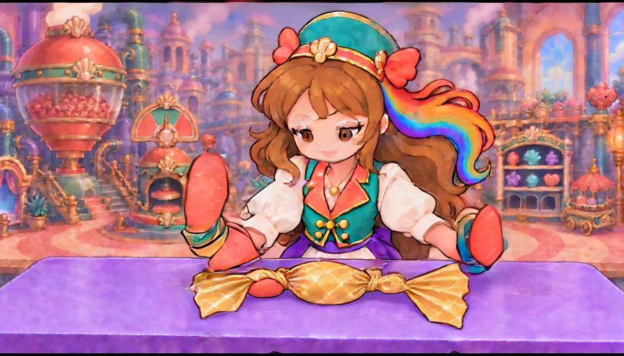
Raised left palm, lower coral/cuff wedge and coral neck remnant are all visible together. The hand has not withdrawn as one coherent owned shape.
Complete action, current game and owner acceptance unassigned for this individual canvas.
Frame 21 · 0.875s · pose graphics 1.5/5
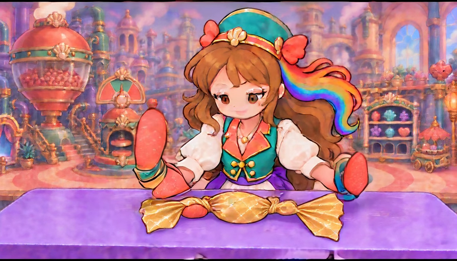
The display pose persists with the same extra coral left-hand remnants. The candy body stays covered and table-supported.
Complete action, current game and owner acceptance unassigned for this individual canvas.
Frame 22 · 0.917s · pose graphics 1.5/5
Both hands remain raised rather than quietly resting outside the fan tips. The left cuff and coral remnants still violate topology.
Complete action, current game and owner acceptance unassigned for this individual canvas.
Frame 23 · 0.958s · pose graphics 1.5/5
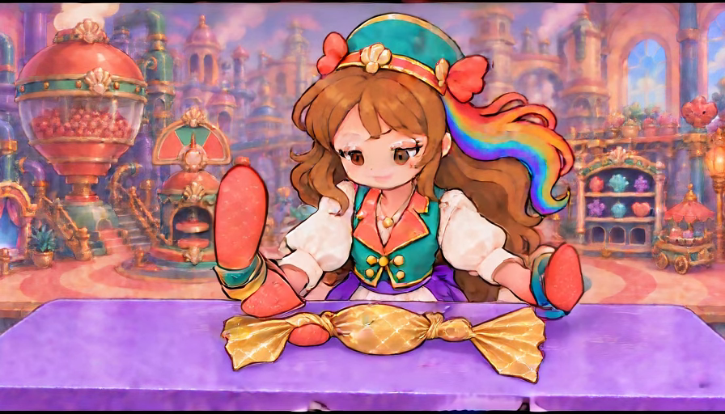
Upright palms hold with an extra lower left coral wedge. Fans remain attached, but clean sleeve-to-hand ownership has failed.
Complete action, current game and owner acceptance unassigned for this individual canvas.
Frame 24 · 1.000s · pose graphics 1.5/5
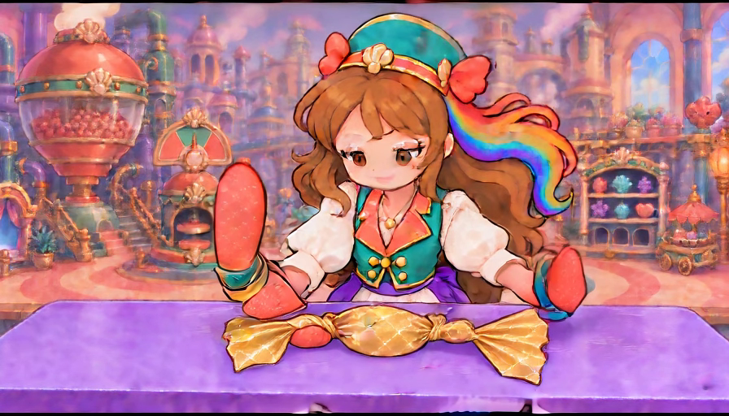
Left palm becomes taller while the lower coral wedge and neck remnant persist. Right palm remains raised; no calm supported-release endpoint.
Complete action, current game and owner acceptance unassigned for this individual canvas.
Frame 25 · 1.042s · pose graphics 1.2/5
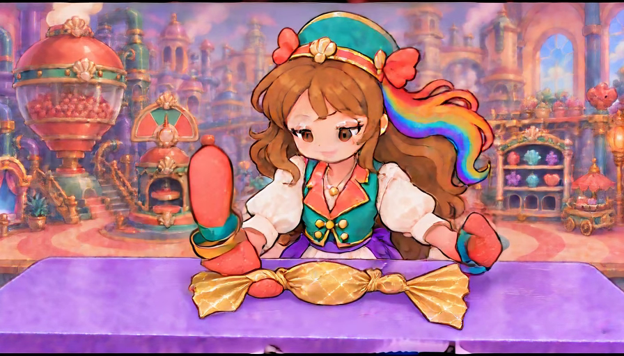
Left upright mitten elongates and its cuff changes shape. Right hand begins folding down; extra left coral pieces remain beside the wrapper.
Complete action, current game and owner acceptance unassigned for this individual canvas.
Frame 26 · 1.083s · pose graphics 1.2/5
The left hand still reads as a tall vertical oval with a second coral wedge beneath the cuff. The right cuff turns downward outside its fan.
Complete action, current game and owner acceptance unassigned for this individual canvas.
Frame 27 · 1.125s · pose graphics 1.2/5
Right palm shrinks into a bent coral shape while the left upright oval and separate lower remnants remain. Coherent two-hand settle is absent.
Complete action, current game and owner acceptance unassigned for this individual canvas.
Frame 28 · 1.167s · pose graphics 1.2/5
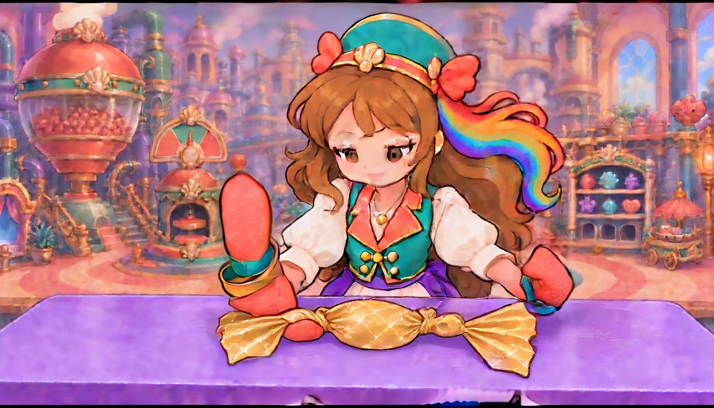
Asymmetric raised-left/bent-right pose persists; the left neck still has a detached coral lobe. Wrapper fan contours remain broadly continuous.
Complete action, current game and owner acceptance unassigned for this individual canvas.
Frame 29 · 1.208s · pose graphics 1.2/5
Left palm stays upright with a broken lower cuff shape; the right mitten is curled down. This does not match the quiet released source endpoint.
Complete action, current game and owner acceptance unassigned for this individual canvas.
Frame 30 · 1.250s · pose graphics 1.2/5
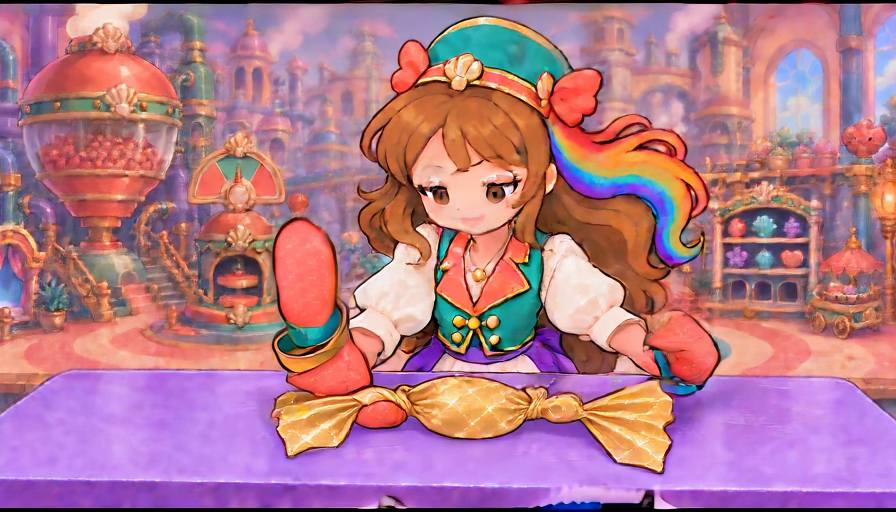
Late intended rest still shows a tall raised left mitten, lower coral wedge and left-neck remnant. The right hand remains bent outside the fan.
Complete action, current game and owner acceptance unassigned for this individual canvas.
Frame 31 · 1.292s · pose graphics 1.2/5
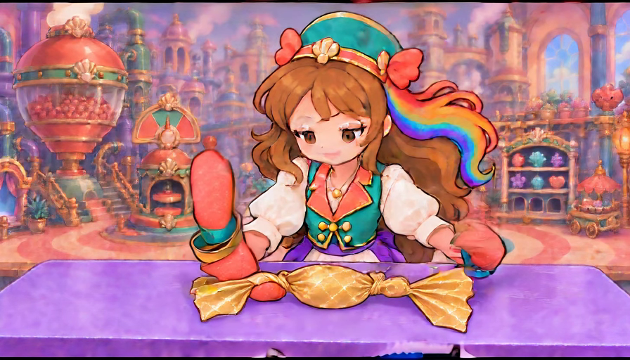
No clean settle: the left glove stays vertical and overextended, while the right glove/cuff contour contracts. The central gold body stays low.
Complete action, current game and owner acceptance unassigned for this individual canvas.
Frame 32 · 1.333s · pose graphics 1.2/5
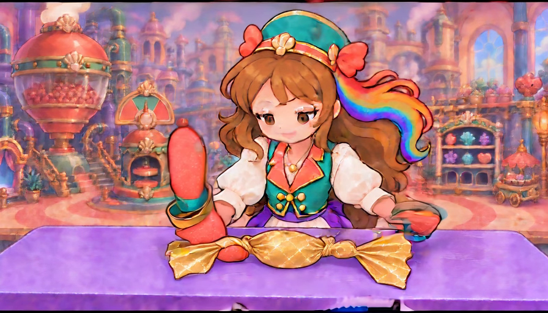
Right wrist and mitten show motion smearing as they lower toward the right fan. The left detached coral remnants remain unchanged.
Complete action, current game and owner acceptance unassigned for this individual canvas.
Frame 33 · 1.375s · pose graphics 1.2/5
Right hand rolls down close to the outer fan; left hand remains upright and split around its cuff. Both hands cannot receive a topology pass.
Complete action, current game and owner acceptance unassigned for this individual canvas.
Frame 34 · 1.417s · pose graphics 1.2/5
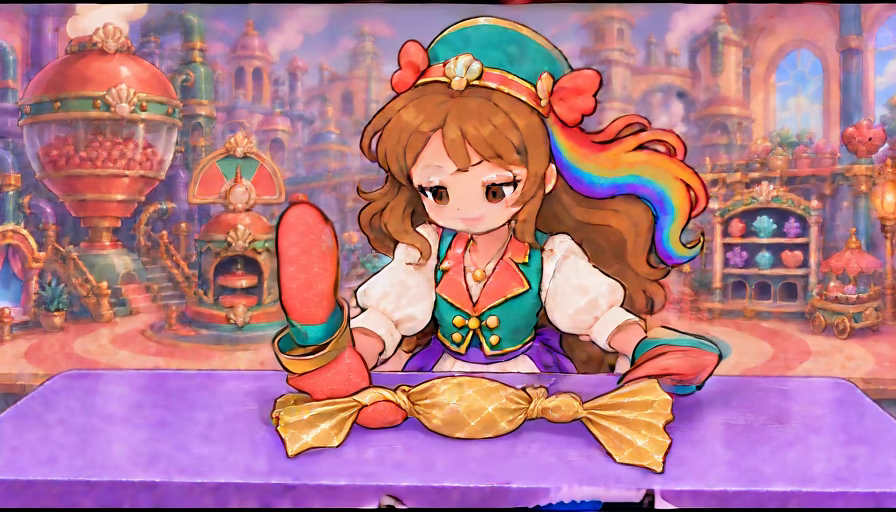
Right palm now lies low beside the fan but the left remains a tall raised oval with extra coral material at the neck.
Complete action, current game and owner acceptance unassigned for this individual canvas.
Frame 35 · 1.458s · pose graphics 1.2/5
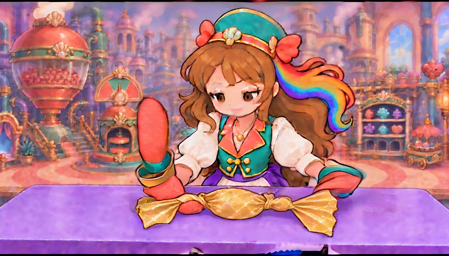
The asymmetric near-hold continues. Left cuff bands and lower coral wedge fail the original simple sleeve-owned mitten design.
Complete action, current game and owner acceptance unassigned for this individual canvas.
Frame 36 · 1.500s · pose graphics 1.2/5
Left hand remains elongated and raised; right cuff is stretched into a low bent position. Left-neck coral remnant remains on the table.
Complete action, current game and owner acceptance unassigned for this individual canvas.
Frame 37 · 1.542s · pose graphics 1.2/5
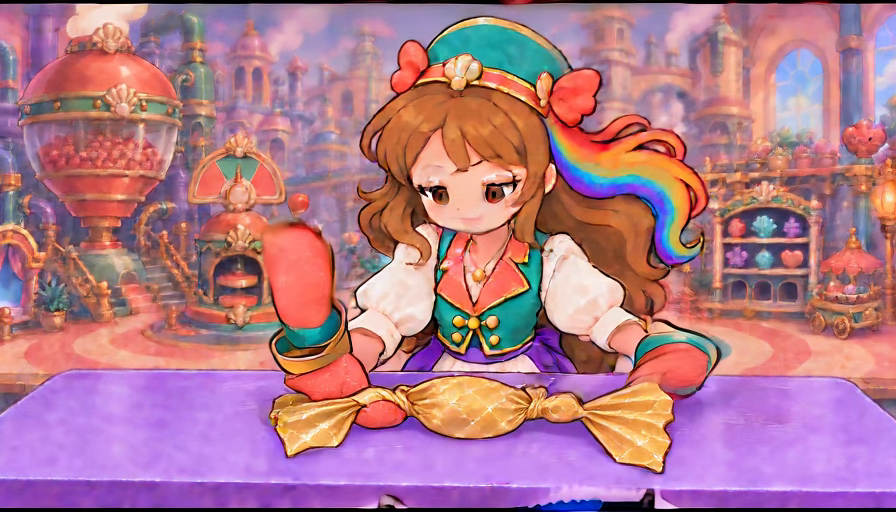
Late source placement varies slightly while the same malformed glove/cuff silhouettes persist. The candy stays covered but release quality fails.
Complete action, current game and owner acceptance unassigned for this individual canvas.
Frame 38 · 1.583s · pose graphics 1.2/5
Right mitten moves near the right fan, while the left raised palm and separate lower remnants remain. There is no matching calm two-hand rest.
Complete action, current game and owner acceptance unassigned for this individual canvas.
Frame 39 · 1.625s · pose graphics 1.2/5
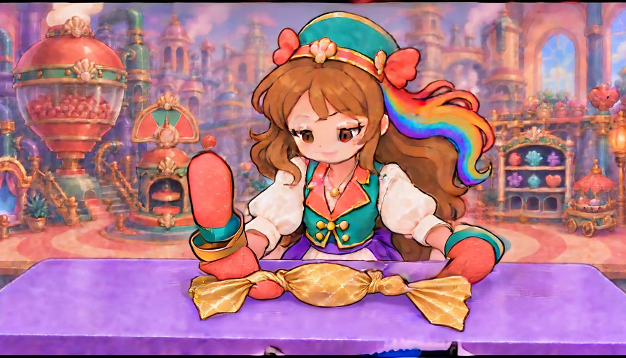
Final approach retains the left neck coral lobe and deformed upright glove. The right hand is low, close to the fan edge.
Complete action, current game and owner acceptance unassigned for this individual canvas.
Frame 40 · 1.667s · pose graphics 1.2/5

Endpoint contains one covered table-supported gold sweet, but a raised elongated left mitten, extra coral left-neck material and altered cuffs. Rejected: clean whole-hand disengagement and quiet two-hand rest are missing.
Complete action, current game and owner acceptance unassigned for this individual canvas.